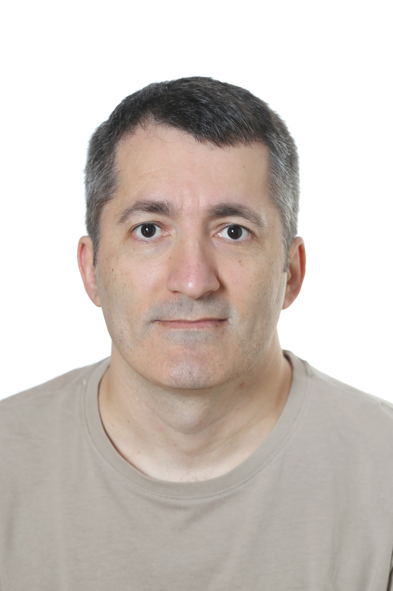

Marius Dambu Dambu
Workplace Support Engineer / EUC & Endpoint Support
Valdemoro, Madrid, Spain · Spanish citizenship · Driving license A and B
+34 675 506 700 · mariusdambu@gmail.com · linkedin.com/in/mariusdambu
+34 675 506 700 · mariusdambu@gmail.com · linkedin.com/in/mariusdambu
LinkedInInfoJobs
ENFull version
18+years in IT
Workplaceusers, VIP and endpoints
Infradata center, storage and Smart Hands
Professional profile
Workplace Support Engineer with more than 18 years of experience in corporate IT support, workplace technologies, Windows deployment and enterprise infrastructure in multinational environments.
My profile combines user-focused support with practical infrastructure experience: corporate users, VIP profiles, endpoints, Microsoft 365, ServiceNow, data center operations, Smart Hands and enterprise storage and backup platforms.
I bring value by resolving incidents, coordinating with international technical teams and maintaining service continuity through sound operational judgement, clear communication and strong user orientation.
AXIOM Technologies Spain S.L. · Assigned to Intact Insurance (Europe)
June 2025 – PresentMadrid
- Workplace support for corporate users and VIP profiles in an international insurance environment.
- Deployment, preparation, replacement and refresh of Windows 10/11 devices.
- Microsoft 365 support and incident/request management through ServiceNow.
- Operational Windows Autopilot and Intune support, with basic administration of groups, devices and access in Entra ID.
- Collaboration with international IT teams in the United Kingdom, Belgium, the Netherlands and France, supporting technical peers across Europe.
Field Engineer & Infrastructure Support
Eltec IT Services / TVS SCS
2020 – June 2025Madrid
- Field engineering and enterprise infrastructure support for multinational customers and critical environments.
- Smart Hands, rack and stack, hardware break/fix, component replacement and vendor coordination.
- Support for Quantum Scalar, DXi and StorNext; Pure Storage FlashArray and FlashBlade; Dell EMC Unity, VNX, VMAX and PowerMax.
- Assistance with Cisco and Riverbed infrastructure and data center operations.
Marius Dambu Dambu
Previous experience, education and objective
Valdemoro, Madrid · mariusdambu@gmail.com · linkedin.com/in/mariusdambu
LinkedInInfoJobs
ENContinued
Previous experience
August 2009 – 2020
- Desktop, remote and onsite support for corporate users in enterprise environments.
- Troubleshooting of Microsoft Windows, corporate applications, hardware and peripherals.
- Active Directory administration and support for the user lifecycle.
- Endpoint deployment, workplace support, service requests and technical escalations.
- Onsite support for Mapfre users, covering hardware and software incidents.
- User and workstation management through Active Directory.
- Local assistance and Smart Hands support in data center environments.
Support Technician & Inventory Manager
PC City Spain S.A.U.
Mar. 2007 – Dec. 2007
- Diagnosis and repair of IT equipment, defective product inventory management, returned hardware quality control and basic technical support.
Technical operating context
- Support for VIP users and corporate users in multinational environments.
- Incident, request and escalation handling with coordination across international technical teams.
- Experience with hardware refresh, Windows deployment, endpoint support and operational use of ITSM tools.
- Practical background in enterprise infrastructure, data center operations, storage, backup and Smart Hands support.
Career objective
Continue growing in Workplace Support Engineer, Desktop Support Engineer, Workplace Technology Specialist or EUC / Endpoint Support roles, combining user support, endpoint services and infrastructure experience.